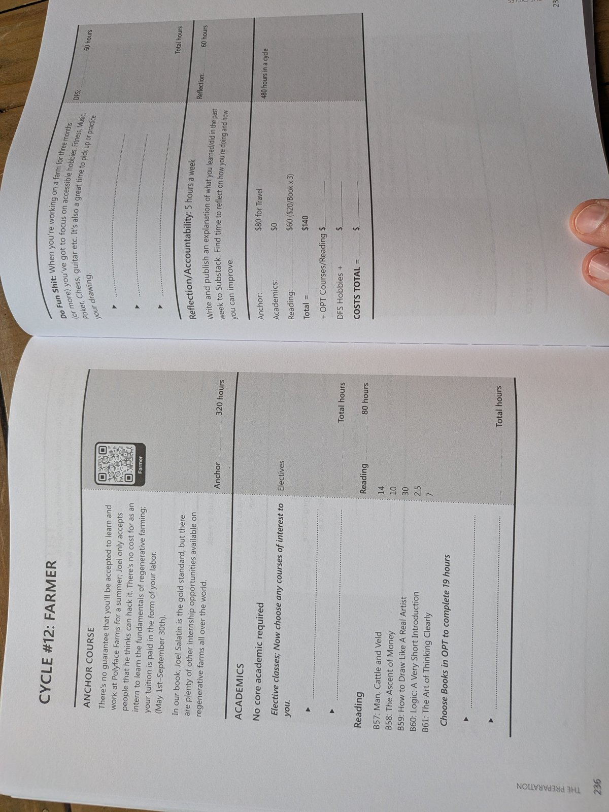

Cycle 12 · 11th-grade Spark · 2029–30
Cycle 12 · 11th-grade Spark — a full season grow/raise. East TX AgriLife / home food system, with optional Oahu regenerative block via family friends. Climax: yield/chore log + host letter.

Not a weekend garden. Chores that stack for a season — plus a mentor or host who will sign what he actually did.
The call: show up for the chore when you don't feel like it, measure the yield, and thank the host in writing.
A real season on land — East TX food system plus optional Oahu regenerative block with family friends.
| Window | He does | Links |
|---|---|---|
| Fall | AgriLife · season plan · chore log | AgriLife |
| Winter → spring | Field work · optional Oahu block | WWOOF · Mohala |
| Season end | Yield log + host letter | SBDC ag |
Every bookable gate, camp, class, and competition in one place. Register early — spring slots fill.
| Resource | Use for | Link |
|---|---|---|
| Texas A&M AgriLife Extension | State resources | agrilifeextension.tamu.edu/ |
| Smith County AgriLife | Local 4-H / ag | agrilifeextension.tamu.edu/counties/smith-county/ · 903-590-2980 |
| WWOOF USA | Find host farms | wwoofusa.org/ |
| Mohala Farms (Oʻahu) | North Shore regenerative | mohalafarms.org/ |
| MAʻO Organic Farms | Oʻahu youth farm | www.maoorganicfarms.org/ |
| Tyler SBDC | Ag business layer | tylersbdc.com/ |